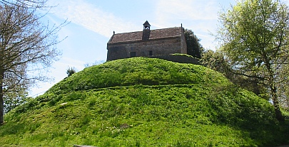

Un tèrrib'lye dragon vivait l'temps passé dans l'Mathais d'St Louothains et quand i' sortait faisait des ravages dans la campagne, en tuant à drouaite et à gauche. Les pouorres médgians tchi vivaient en Jèrri dans chu temps-là 'taient êpouvantés et craintifs jour et niet.
Né v'là qué l'Seigneu d'Hambye, en Nouormandie, en eut l'vent siez li dans san Châté d'Hambye: et même nou l'suppliyit dé v'nin en Jèrri pour dêtruithe chutte laie et âffreuse bête.
Du coup i' fit ses adgieux à sa danme: il app'lit s'n êtchuyer et i' s'mîntent les deux en viage.
Pèrsonne n'ont janmais seu tch'est qu'en fut d'la batâle sinon tch'i' pathait qué l'Seigneu attatchit la bête tout seu et finnit par l'ag'ver en li coppant la tête horte. Et pis, à cause dé ses bliesseuses, i' s'couochit pour s'èrposer dans un bocage dé bouais d'haute futaie, auve s'n êtchuyer fidèle (comme i' cryait) à faithe la garde. Un co san maître bein endormi, lé reintchivale dé cotchîn vit sa chance. Envieux et traître tch'il 'tait, et voulant sans doute faithe à craithe qué la glouaithe dé la batâle li' apparténait, il êgorgit san maître et l'entèrrit sans pus ni mains.
D'èrtou au Châté d'Hambye, i' racontit à la châtelaine qué l'dragon avait tué san Seigneu et qué, li, a san tou avait bigorgi la bête. En outre, i' lî dit, lé souhait du maître en s'mouothant avait 'té que la veuve mathiêthait l'êtchuyer. Chettechîn, n'ayant pon dé soupçons, s'y'atchiêssit.
Mais pus tard la conscienche du peûle lé pitchait et niet auprès niet, il avait d'mauvais rêves, tréjous entouor san crînme. I' s'mint à pâler dans san dormi: 'Oh scélérat qué j'sis j'ai machacré man maître!' A la fîn la danme s'avisit dé l'traduithe en justice. I' s'avouit, et fut mîns à mort.
Assa, où'est qu'lé corps dé s'n homme avait 'té enfoui, dans la pâraisse dé St Sauveux en Jèrri, la danme dé Hambye fit bâti un mondrîn et l'nommit La Hougue Hambye (ou La Hougue Bie).
Viyiz étout: